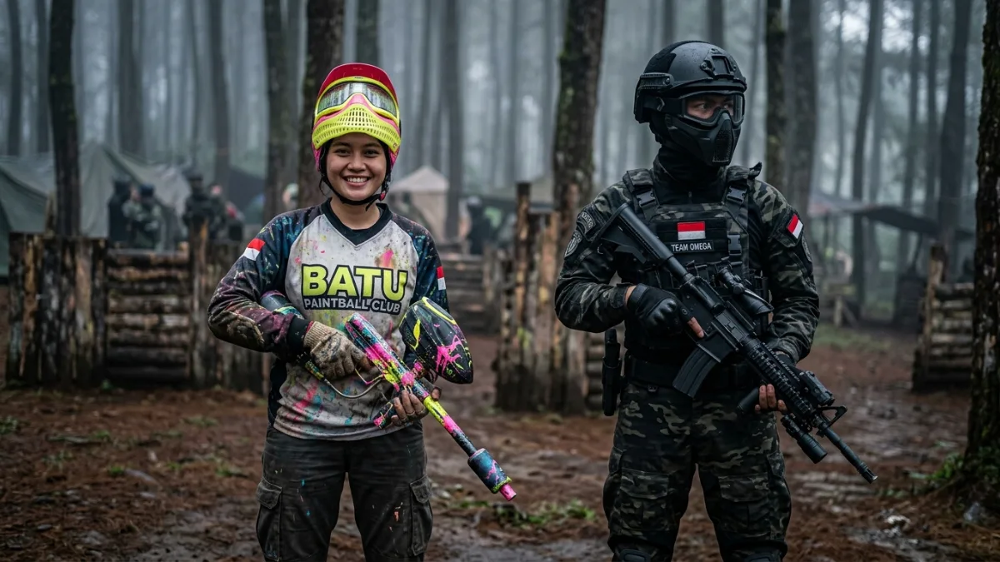
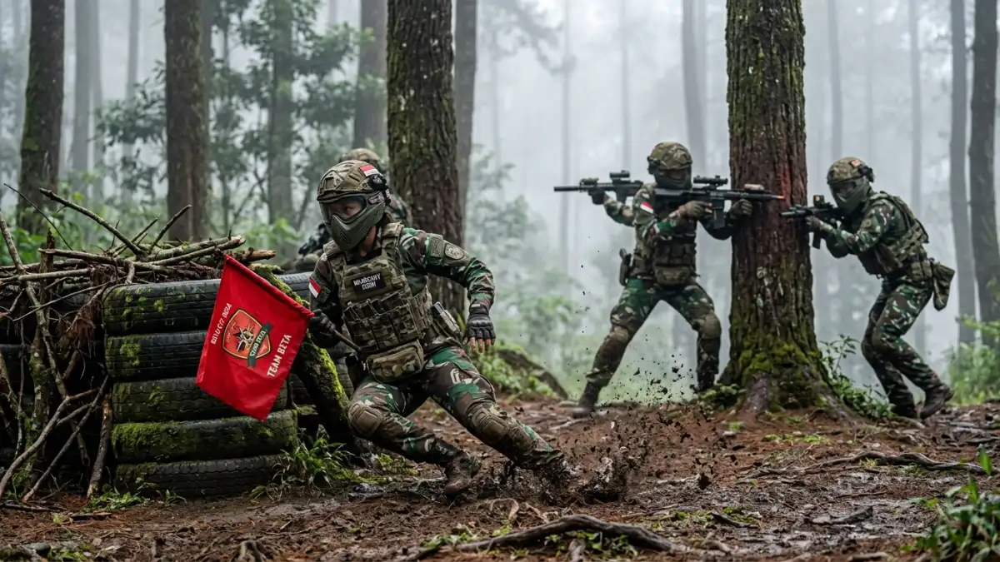

Perbandingan suasana permainan paintball dan war game di arena outdoor kawasan Batu.Perbandingan paintball dan war game di Batu terletak pada jenis peluru, variasi skenario permainan, dan tingkat kompleksitas aturan yang diterapkan selama sesi berlangsung.
Apa Perbedaan Utama Paintball dan War Game?
Perbedaan utama terletak pada jenis peluru yang digunakan, di mana paintball menggunakan peluru cat sementara war game dapat mencakup skenario dengan peluru non-cat serta variasi misi permainan yang lebih luas.
Paintball secara umum menggunakan marker berukuran lebih besar dengan peluru cat yang mudah dikenali saat mengenai peserta, sehingga penilaian siapa yang terkena tembakan menjadi lebih objektif secara visual.
War game, di sisi lain, sering dikaitkan dengan skenario permainan yang lebih beragam, seperti misi merebut bendera, pertahanan wilayah, atau simulasi taktis dengan aturan tertentu.
Beberapa provider di Batu menawarkan kedua format ini secara terpisah, sementara sebagian lain menggabungkan elemen war game ke dalam sesi paintball agar permainan terasa lebih variatif.
Mana yang Lebih Cocok untuk Pemula?
Paintball klasik umumnya lebih cocok untuk pemula karena aturan mainnya lebih sederhana dibandingkan war game yang sering melibatkan skenario dan strategi tim yang lebih kompleks.
Bagi peserta yang baru pertama kali mencoba aktivitas ini, paintball klasik dengan format permainan sederhana seperti eliminasi tim biasanya lebih mudah dipahami dan diikuti.
War game dengan skenario seperti capture the flag atau misi pertahanan wilayah umumnya membutuhkan pemahaman strategi dan kerja sama tim yang lebih matang, sehingga lebih cocok bagi peserta yang sudah memiliki pengalaman bermain sebelumnya atau komunitas yang terbiasa dengan permainan taktis kelompok.

Tim peserta menjalankan skenario war game merebut bendera di arena outdoor kawasan Batu.Apakah Biaya Paintball dan War Game Berbeda?
Biaya keduanya dapat berbeda tergantung pada jenis skenario, durasi permainan, dan kompleksitas pengaturan medan yang diperlukan oleh provider.
War game dengan skenario yang lebih kompleks, seperti penambahan properti medan atau misi bertingkat, berpotensi memerlukan biaya operasional lebih tinggi dibandingkan sesi paintball klasik dengan format sederhana.
Namun demikian, besaran biaya tetap bergantung pada kebijakan masing-masing provider, sehingga calon peserta sebaiknya menanyakan rincian harga secara langsung untuk mendapatkan gambaran yang sesuai dengan paket yang diinginkan.
Bagaimana Menentukan Pilihan Sesuai Kebutuhan Rombongan?
Pemilihan antara paintball atau war game sebaiknya disesuaikan dengan tujuan acara, tingkat pengalaman peserta, dan waktu yang tersedia untuk sesi bermain.
Untuk acara keluarga atau gathering santai, paintball klasik dengan format permainan sederhana umumnya lebih mudah diikuti oleh peserta dengan berbagai rentang usia.
Sementara itu, war game dengan skenario misi tim lebih cocok untuk acara yang bertujuan membangun kekompakan dan strategi kelompok, seperti kegiatan team building perusahaan atau komunitas yang sudah terbiasa dengan permainan taktis.
Menyampaikan tujuan acara secara jelas kepada provider akan membantu menentukan format permainan yang paling sesuai dengan kebutuhan rombongan.
Kesimpulan
Paintball dan war game di Batu memiliki karakter permainan yang berbeda, mulai dari jenis peluru, kompleksitas skenario, hingga tingkat kesesuaian untuk pemula.
Memahami perbedaan ini membantu calon peserta memilih format yang paling sesuai dengan tujuan dan pengalaman rombongan.
FAQ — Perbandingan Paintball dan War Game di Batu